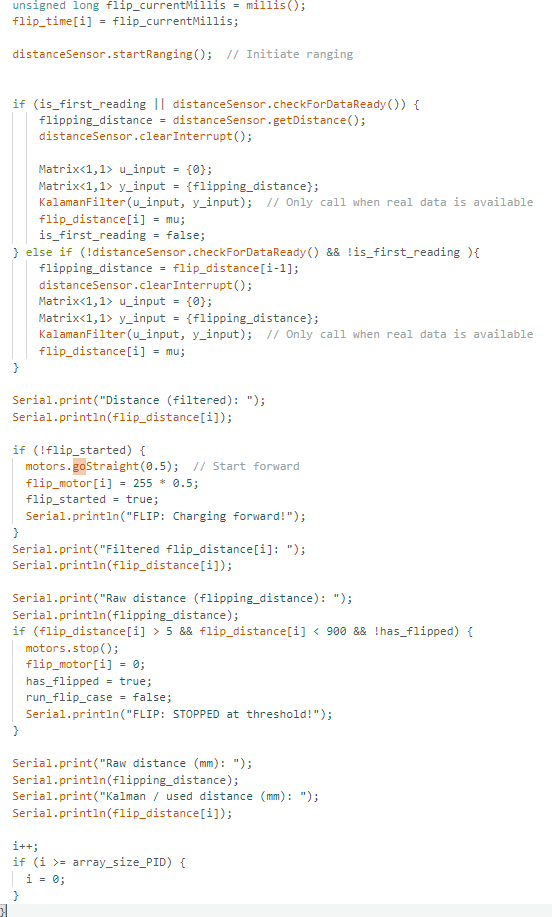
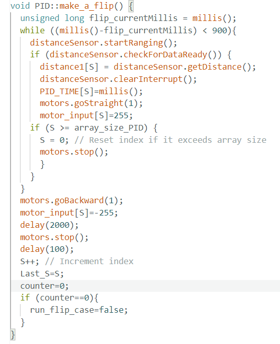
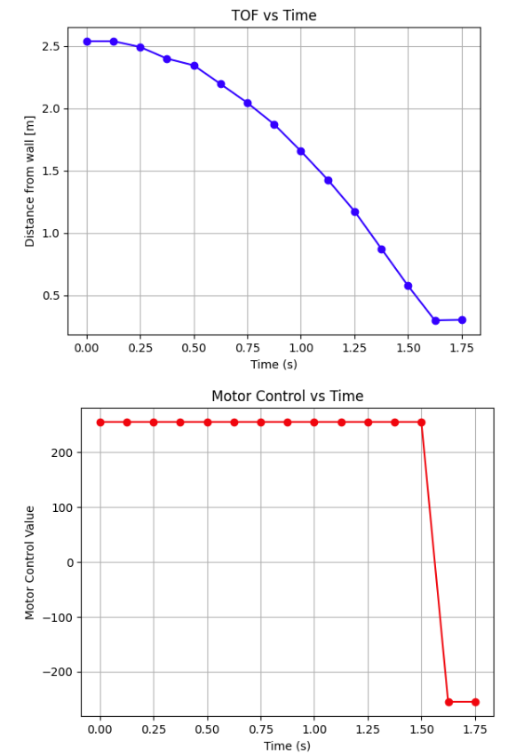
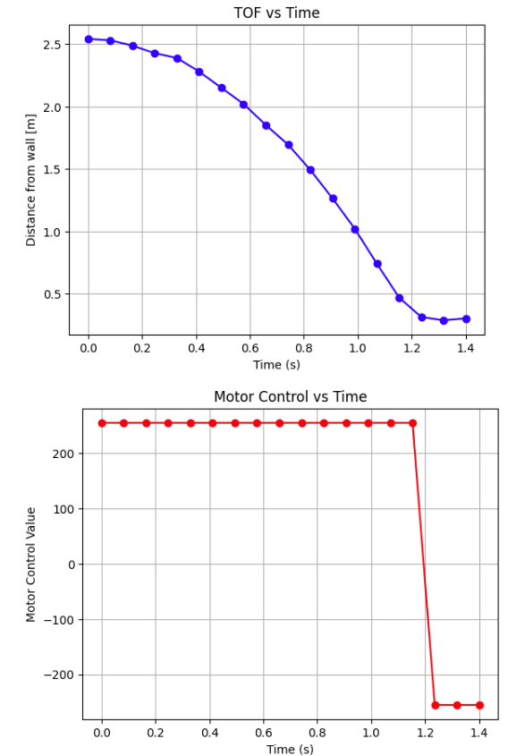

Lab 8 : Stunts
The objective of this lab is to be able to combine everything that we have done so far to be able to make our robot do a stunt.
Task A: Flip
The stunt that I chose to do was a flip. At frist, I attempted to detect the distance and once it detected the distance, it would stop, flip, and then go backwords.
However, everytime I attemped to flip or make the robot stop at a certain distance, it would hit the wall. I then decided, that maybe my TOF sensor was not dectecting
the distance as quickly, so I implemented the kalaman filter, but the issue presisted. I included the snippet of the code that I did not use to do the flips, but shows that I tried.
Also, I would like to mention that I got my Kalman filter to work on my PID, and when I tested it out on the PID it was working just fine and was able to detect the wall.
The stunt I chose to implement was a front flip. Initially, my approach was to use the TOF sensor to detect a specific distance from the wall, at which point the robot would stop, execute the flip, and then drive backward. However, during testing, the robot consistently collided with the wall before flipping. I suspected that the ToF sensor wasn’t reacting quickly enough, so I integrated a Kalman filter to improve the responsiveness and reliability of the distance measurements. Unfortunately, the issue persisted even after filtering.
Although I didn’t end up using this distance-based flip logic in my final implementation, I’ve included a snippet of the code to demonstrate the attempt. On a positive note, I successfully integrated the Kalman filter into my PID controller for wall detection, and during those tests, it performed more reliably and did not freak out on me.
Finally, I forgot to mention that I used a sticky mat to help the robot flip. I also taped my back wheels which helped the robor flip better. Akso, I cleaned the wheels of my robot becuase the floor was
dusty which meant that the wheels lost grip and would not excuate what it was asked for.

In my actual implementation, I used a different approach. I set the robot to drive forward for a specific duration, then execute the flip, and finally drive backward for a set time. This method worked effectively, and I was able to successfully perform the flip without any collisions.
Snippet of the code that I used to do the flip:

In the code above, I only collected distance data while the robot was moving forward, as I initially didn’t think backward movement data would be relevant. For the forward motion, I set the motor speed to the maximum value of 255. During testing, I found that using my calibrated wheel speeds didn’t produce enough momentum for the robot to successfully complete the flip. However, when using the maximum speed, the robot was able to flip as expected.
By hard-coding the flip, I was able to get it to flip as shown below:


Bloopers
Conclusion
Overall, I was able to successully do the flip on my car not once but three times. I wonder if instead of stopping and also using the sticky mat would change the results, and give me better flip than running into the wall. I worked with Henry and Roberto on this lab, we collaborated and helped each other.